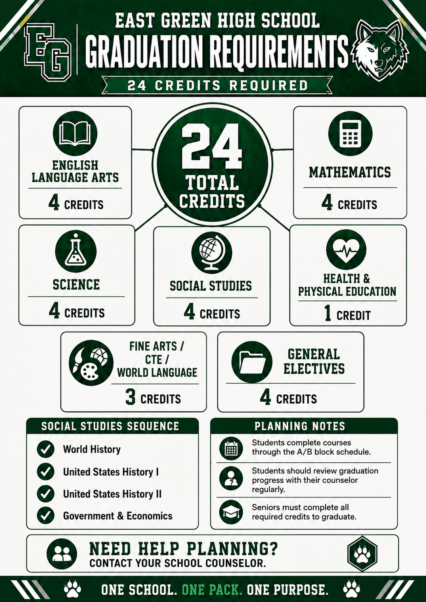

English 9
ENG 9 • Grades 9
East Green's academic program combines four core subject areas with career and technical education, fine arts, physical education, and practical electives. AP and honors offerings are intentionally deferred until enrollment and staffing grow.

The framework gives students a full academic core while preserving room for CTE, fine arts, world-language-equivalent options, and electives.
1 credit of Health and Physical Education.
3 credits selected from approved program areas.
4 credits providing flexibility for pathways and student interests.
| Grade | English | Math | Science | Social Studies |
|---|---|---|---|---|
| 9 | English 9 | Algebra I | Biology | World History |
| 10 | English 10 | Geometry | Physical Science / Chemistry | U.S. History I |
| 11 | English 11 | Algebra II | Chemistry / Science Elective | U.S. History II |
| 12 | English 12 | Precalculus / Statistics / Consumer Math | Science Elective | Government + Economics |

Use the filters to browse East Green's current active curriculum. Course availability may vary by staffing and yearly enrollment.
ENG 9 • Grades 9
ENG 10 • Grades 10
ENG 11 • Grades 11
ENG 12 • Grades 12
CRE WRT • Grades 10-12
PUB SPK • Grades 9-12
JOUR/YB • Grades 9-12
ALG I • Grades 9-10
GEOM • Grades 9-11
ALG II • Grades 10-12
ALG2 STAT • Grades 10-12
PRECALC • Grades 11-12
STAT • Grades 11-12
CONS MATH • Grades 11-12
BIO • Grades 9-10
PHYS SCI • Grades 9-10
CHEM • Grades 10-12
ENV SCI • Grades 10-12
ANAT PHYS • Grades 11-12
PHYSICS • Grades 11-12
FORENSIC • Grades 10-12
WORLD HIST • Grades 9
US HIST I • Grades 10
US HIST II • Grades 11
US GOV • Grades 12
ECON • Grades 12
PSYCH • Grades 10-12
SOC • Grades 10-12
CUR ISSUES • Grades 11-12
COMP APP • Grades 9-12
BUS FOUND • Grades 9-12
IT FUND • Grades 9-12
CYBER • Grades 10-12
PERS FIN • Grades 10-12
ENTRE • Grades 10-12
WEB DES • Grades 10-12
CRIM JUST • Grades 9-12
LAW ENF I • Grades 10-12
LAW ENF II • Grades 11-12
CRIM INV • Grades 11-12
LAW SOC • Grades 10-12
EMERG MGT • Grades 10-12
PUB SAF COM • Grades 10-12
CUL I • Grades 9-12
CUL II • Grades 10-12
HOSP TOUR • Grades 10-12
ART I • Grades 9-12
ART II • Grades 10-12
PHOTO • Grades 10-12
DIG ART • Grades 9-12
THEATRE I • Grades 9-12
GRAPH DES • Grades 10-12
PE • Grades 9-12
HEALTH • Grades 9-12
STR COND • Grades 9-12
TEAM SPT • Grades 9-12
LIFE FIT • Grades 10-12
ATH PE • Grades 9-12
Course guides identify essential standards, pacing, required assessment evidence, intervention, reteaching, and reassessment expectations.
Focused checks of a small cluster of standards, generally designed to fit the 30-minute instructional model.
Core academics balance foundational knowledge, application/analysis, and transfer or extended reasoning.
Science, CTE, fine arts, and PE courses include labs, practicals, projects, portfolios, demonstrations, or performance tasks.